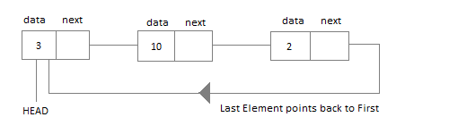

Circular Linked List is little more complicated linked data structure. In the circular linked list we can insert elements anywhere in the list whereas in the array we cannot insert element anywhere in the list because it is in the contiguous memory. In the circular linked list the previous element stores the address of the next element and the last element stores the address of the starting element. The elements points to each other in a circular way which forms a circular chain. The circular linked list has a dynamic size which means the memory can be allocated when it is required.

Application of Circular Linked List
The real life application where the circular linked list is used is our Personal Computers, where multiple applications are running. All the running applications are kept in a circular linked list and the OS gives a fixed time slot to all for running. The Operating System keeps on iterating over the linked list until all the applications are completed.
Another example can be Multiplayer games. All the Players are kept in a Circular Linked List and the pointer keeps on moving forward as a player's chance ends.
Circular Linked List can also be used to create Circular Queue. In a Queue we have to keep two pointers, FRONT and REAR in memory all the time, where as in Circular Linked List, only one pointer is required.
Implementing Circular Linked List
Implementing a circular linked list is very easy and almost similar to linear linked list implementation, with the only difference being that, in circular linked list the last Node will have it's next point to the Head of the List. In Linear linked list the last Node simply holds NULL in it's next pointer.
So this will be oue Node class, as we have already studied in the lesson, it will be used to form the List.
Circular Linked List
Circular Linked List class will be almost same as the Linked List class that we studied in the previous lesson, with a few difference in the implementation of class methods.
Insertion at the Beginning:
Steps to insert a Node at beginning
The first Node is the Head for any Linked List.
When a new Linked List is instantiated, it just has the Head, which is Null.
Else, the Head holds the pointer to the fisrt Node of the List.
When we want to add any Node at the front, we must make the head point to it.
And the Next pointer of the newly added Node, must point to the previous Head, whether it be NULL(in case of new List) or the pointer to the first Node of the List.
The previous Head Node is now the second Node of Linked List, because the new Node is added at the front.
Insertion at the End:
Steps to insert a Node at the end :
If the Linked List is empty then we simply, add the new Node as the Head of the Linked List.
If the Linked List is not empty then we find the last node, and make it' next to the new Node, and make the next of the Newly added Node point to the Head of the List.
Searching for an Element in the List:
In searhing we do not have to do much, we just need to traverse like we did while getting the last node, in this case we will also compare the data of the Node. If we get the Node with the same data, we will return it, otherwise we will make our pointer point the next Node, and so on.
Deleting a Node from the List:
Deleting a node can be done in many ways, like we first search the Node with data which we want to delete and then we delete it. In our approach, we will define a method which will take the data to be deleted as argument, will use the search method to locate it and will then remove the Node from the List.
To remove any Node from the list, we need to do the following :
If the Node to be deleted is the first node, then simply set the Next pointer of the Head to point to the next element from the Node to be deleted. And update the next pointer of the Last Node as well.
If the Node is in the middle somewhere, then find the Node before it, and make the Node before it point to the Node next to it.
If the Node is at the end, then remove it and make the new last node point to the head.
Happy Coding 😊
By Programmers Army
Contributed by: Aatif Rashid